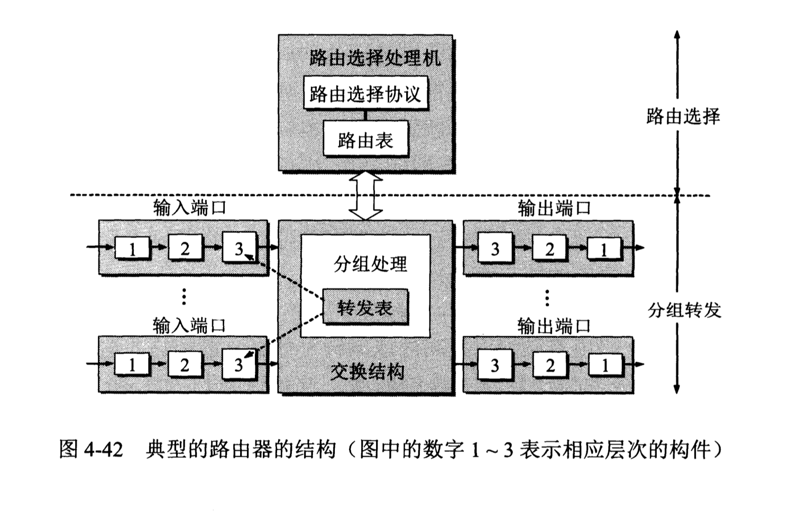

路由选择协议的几个基本概念
- 理想的路由算法
- 算法必须是正确的和完整的。
- 算法在计算上应简单。
- 算法应能适应通信量和网络拓扑的变化。
- 算法应具有稳定性。
- 算法应是公平的。
- 算法应是最佳的。
- 算法必须是正确的和完整的。
- 分层次的路由选择协议
互联网采用的路由选择协议主要是自适应的（即动态的）、分布式路由选择协议。为此，可以把整个互联网划分为许多较小的自治系统(autonomous system)，一般都记为AS。自治系统AS是单一技术管理下的一组路由器，而这些路由器使用一种自治系统内部的路由选择协议和共同的度量。一个AS对其他AS表现出的是一个单一的和一致的路由选择策略。
在目前的互联网中，一个大的ISP就是一个自治系统。这样，互联网就把路由选择协议划分为两大类。- 内部网关协议IGP(Interior Gateway Protocol)。即在一个自治系统内部使用的路由选择协议，而这与在互联网中的其他自治系统选用什么路由选择协议无关。目前这类路由选择协议使用得最多，如RIP和OSPF协议。
- 外部网关协议EGP(External Gateway Protocol)。若源主机和目的主机处在不同的自治系统中（这两个自治系统可能使用不同的内部网关协议），当数据报传到一个自治系统的边界时，就需要使用一种协议将路由选择信息传递到另一个自治系统中。目前使用最多的外部网关协议是BGP协议。
# 内部网关协议RIP RIP(Routing Information Protocol)是一种分布式的基于距离向量的路由选择协议，其最大优点就是简单。
RIP协议的“距离”也称为“跳数”(hop count)，每经过一个路由器，跳数就加1。RIP认为好的路由就是它通过的路由器的数目少，即“距离短”。RIP允许一条路径最多只能包含15个路由器。可见RIP只适用于小型互联网。
RIP协议的特点：
- 内部网关协议IGP(Interior Gateway Protocol)。即在一个自治系统内部使用的路由选择协议，而这与在互联网中的其他自治系统选用什么路由选择协议无关。目前这类路由选择协议使用得最多，如RIP和OSPF协议。
- 仅和相邻路由器交换信息。
- 路由器交换的信息是当前本路由器所知道的全部信息，即自己现在的路由表。
- 按固定的时间间隔交换路由信息。
路由表中最主要的信息就是：到某个网络的距离（即最短距离），以及应经过的下一跳地址。路由表更新的原则是找到每个目的网络的最短距离。这种更新算法又称为距离向量算法。
内部网关协议OSPF
开放最短路径优先OSPF(Open Shortest Path First)最主要的特征就是使用分布式的链路状态协议(link state protocol)，而不是像RIP那样的距离向量协议。和RIP协议相比，OSPF的三个要点和RIP的都不一样：
1. 向本自治系统中所有路由器发送信息。
2. 发送的信息就是本路由器相邻的所有路由器的链路状态。所谓“链路状态”就是说明本路由器都和哪些路由器相邻，以及该链路的“度量”(metric)。OSPF将这个“度量”用来表示费用、距离、时延、带宽等等。
3. 只有当链路发生变化时，路由器才向所有路由器用洪泛法发送此信息。
所有的路由器最终都能建立一个链路状态数据库(link-state database)，这个数据库实际上就是全网的拓扑结构图。
外部网关协议BGP
由于1）互联网的规模太大，使得自治系统AS之间路由选择非常困难。2）自治系统AS之间的路由选择必须考虑有关策略。边界网关协议BGP只能是力求寻找一条能够到达目的网络且比较好的路由（不能兜圈子），而并非要寻找一条最佳路由。BGP采用了路径向量(path vector)路由选择协议，它与距离向量协议（如RIP）和链路状态协议（如OSPF）都有很大的区别。
BGP发言人
>在配置BGP时，每一个自治系统的管理员要选择至少一个路由器作为该自治系统的“BGP发言人”。BGP发言人往往就是BGP边界路由器，但也可以不是。
邻站(neighbor)或对等站(peer)
>使用TCP连接交换路由信息的两个BGP发言人，彼此称为对方的邻站或对等站。
边界网关协议BGP所交换的网络可达性的信息就是要到达某个网络（用网络前缀表示）所要经过的一系列自治系统。当BGP发言人互相交换了网络可达性的信息后，各BGP发言人就根据所采用的策略从收到的路由信息中找出到达各自治系统的较好路由。
路由器的构成

整个路由器结构可划分为两大部分：路由选择部分和分组转发部分。
路由选择部分也叫做控制部分，其核心构件是路由选择处理机。路由选择处理机的任务是根据所选定的路由选择构造出路由表，同时经常或定期地和相邻路由器交换路由信息而不断地更新和维护路由表。
分组转发部分由三部分组成：交换结构、一组输入端口和一组输出端口。交换结构(switching fabric)又称交换组织，它的作用就是根据转发表(forwarding table)对分组进行处理，将某个输入端口进入的分组从一个合适的输出端口转发出去。
参考文献：《计算机网络（第7版）》谢希仁著。